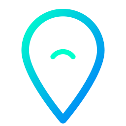

Login IRL SYSTEM
Username: User
Gunakan URL dan Stream ID ini di aplikasi kamera HP Anda.
Paste ke Media Source. Untuk SRT ketik mpegts di Input Format.
mpegts
Gunakan link WebRTC ini jika Anda streaming via TTLS tanpa OBS.
Cam 1 Standby
Tonton panduan cara setup IRL dari nol.